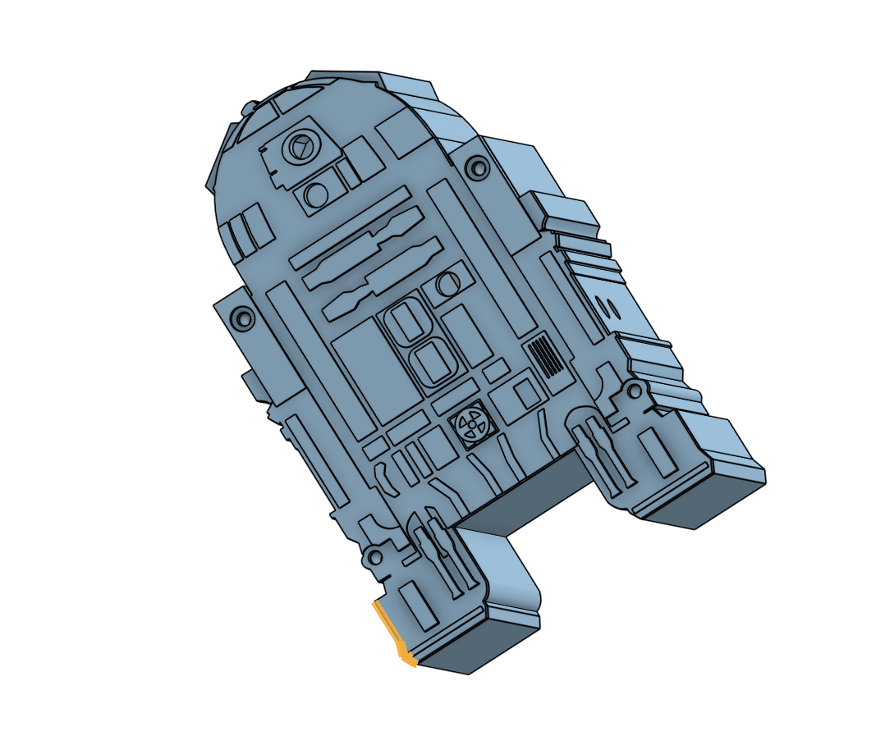
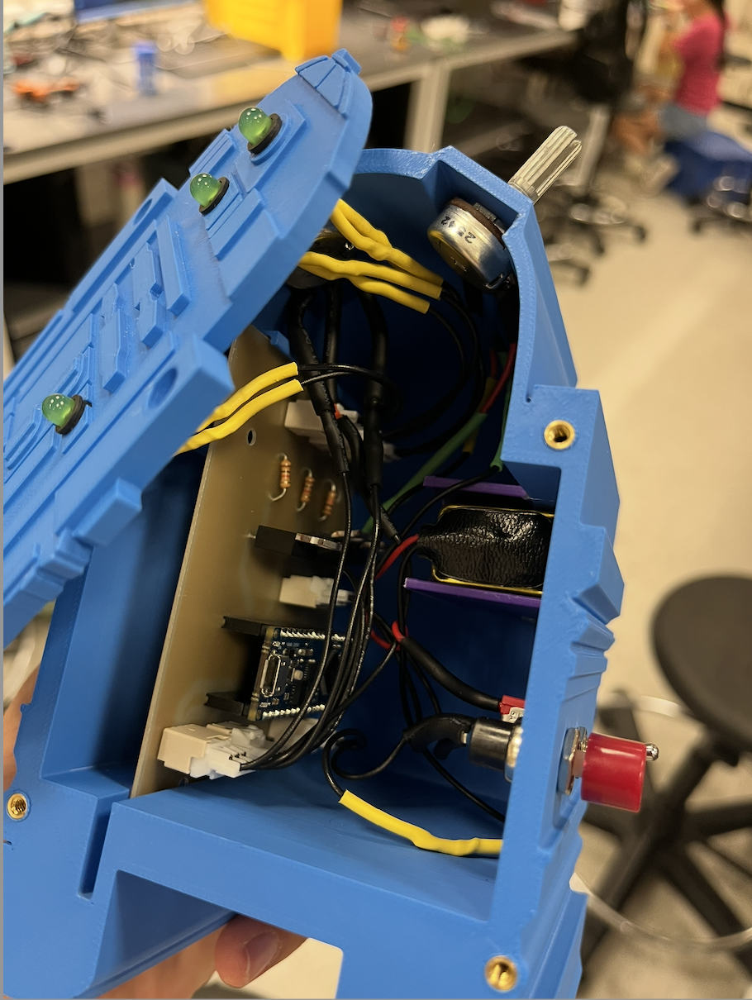

Interrupt-driven state machine
Firmware organized as a state machine using pin-mapping macros and interrupts for external events.
Project 02 · BME 254
An embedded-systems lightbox built around an interrupt-driven state machine, a custom PCB, and a 3D-printed R2D2 enclosure.

The assignment was to design a battery-powered lightbox that combined embedded firmware, a custom circuit board, and a compact 3D-printed enclosure. The final assembly had to fit within a 15 cm limit, securely house the PCB and battery, and expose its switches and potentiometers as durable panel-mounted controls.
Firmware organized as a state machine using pin-mapping macros and interrupts for external events.
A KiCad board cut using Duke’s PCB mill, with an Arduino Nano Every, panel connectors, and MOSFET-driven LED outputs.
A compact housing designed to retain the electronics and battery while providing access to every physical control.
The finished device integrates the controller, LED drivers, wire harnesses, battery, and physical controls inside the printed housing. Panel-mounted inputs connect to the PCB through dedicated connectors, keeping the electronics serviceable while protecting soldered connections and internal wiring.


The lightbox translates physical inputs into timed and continuously adjustable LED behavior while maintaining a heartbeat signal in every operating state.
Unable to load the 3D model.
The complete Arduino firmware implements the interrupt-driven state machine, reads both potentiometers, maps their inputs to LED brightness and blink frequency, manages the timed outputs without blocking the main loop, and maintains the 1 Hz heartbeat.
Loading firmware…The validation plan examined the relationship between potentiometer position and both LED brightness and blink frequency. It also evaluated heartbeat frequency and duty-cycle accuracy in the idle and timed-output states, with raw measurements, statistical analysis, and prototype photos documented in a technical report.